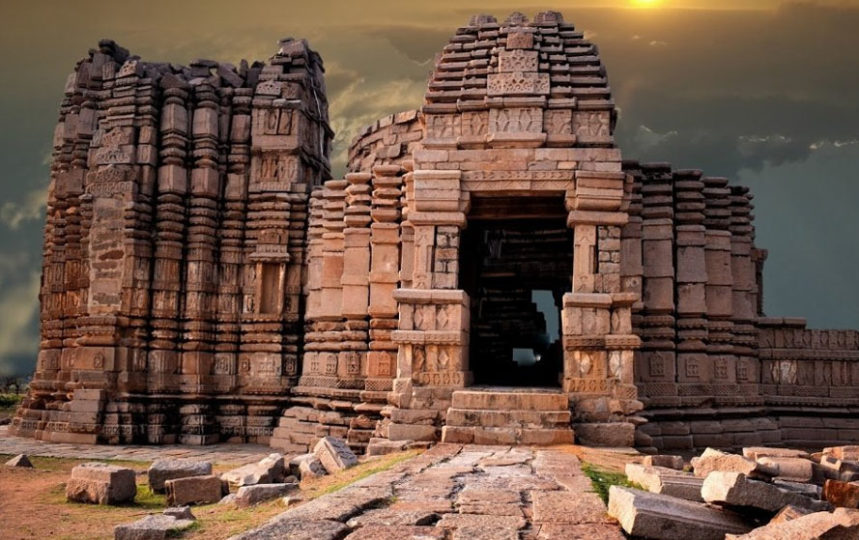

-- Mahoba Tourism Place --
Rahila Sagar Sun Temple in Mahoba (Bundelkhand) which was built more than 1000 years ago by Chandelas, is an example of a prestigious Indian cultural heritage that is going in vain due to ignorance from the government.The Majestic Rahila Sagar Sun Temple (Locally known as Rahiliya temple) has located 3 km from Mahoba in a southwest direction near Mirtala and Rahiliya village. In this temple, Chandela kings used to worship the sun. In those days the sun was considered as a source of energy, health, and positivity in life and Kings use to worship the sun so they will stay in power for long time.

The Khakra Math Temple is a historic temple dedicated to Lord Shiva located in Mahoba City, which is situated in the Mahoba District in the Bundelkhand region of Uttar Pradesh, India. The temple is situated in the middle of Madan Sagar, which adds to its unique and picturesque setting. Mahoba is located on the Lucknow to Bhopal route.The Khakra Math Temple is believed to be approximately 1100 years old, making it a significant historical and religious site.The temple is built of red granite stone and follows the Bhumija style of architecture. It is worth noting that this temple might be the first in the Bundelkhand region to be built in the Bhumija style.
Aalha manch, Bilbai chungi, mahoba is a historical landmark located in Mahoba, Uttar Pradesh. The average rating of this place is 4.20 out of 5 stars based on 59 reviews. The street address of this place is 8V26+4WJ, Sharafipura, Mahoba, Uttar Pradesh 210427, India. It is about 0.86 kilometers away from the Mahoba railway station.Udal is the name of a legendary 12th century general who appears in the Alha-Khand epic. In the epic, Udal and his brother Alha serve in the army of the Chandela king Paramardi Deva (also known as Parmal or Parimal) of Mahoba. They belonged to the Banaphar clan, which are of Rajput and Ahir descent.


Vijay Sagar Bird Sanctuary is located in Mahoba, and its Divisional Head Quater at mirzapur. The Total Geographical is 262.20 ha. is it well connected by road & Rail, nearest railway station is Mahoba, Allahabad - Jhansi train rout. we can accesses by road from Allahabad & Jhansi nearest airport is Khajuraho. In the Sanctuary area we can see Birds , Black neked crane, Harnibills, Coots, Darters, Painted Stark, Brahmi duck Lesser whistling ducks etc. Vijay Sagar Pakshi Vihar is a bird sanctuary in Mahoba district of Uttar Pradesh. It has been developed on the shores of Vijay Sagar, a charming lake built by Vijay Pal Chandela during the 11th century.
-- Hotels --

Hotel RCC (Mahoba)

Hotel Hundred Palm (Mahoba)

Hotel ABADH (Mahoba)

ROYAL PALACE (Mahoba)

SHAYAM PALACE (Mahoba)
-- ABOUT --
Mahoba a small district in Uttar Pradesh is famous for it’s glorious history. It is known for its bravery. The stories Of Veer ALHA and UDAL defines its importance in Indian history. There are various Places which can create live glorious Moment of that previous time. Mahoba is a city located in the Indian state of Uttar Pradesh, in the Bundelkhand region. Mahoba is known for its closeness to Khajuraho, Laundi and other historic places like Kulpahar, Charkhari, Kalinjar, Orchha, and Jhansi. The name Mahoba is derived from Mahotsav Nagar, the city of great festivals. The Bardic tradition preserves three other names of the city: Kekaipur, Patanpur and Ratanpur. The existence of the sacred Ram-Kund and Seeta-Rasoi cave at the Gokhar hill here are said to be monumental to the visit of Rama who widely treated this hilly region while in 14-year exile at Chitrakoot.The name Mahoba is derived from ‘Mahotsav Nagar’, the city of great festivals , which were celeberated here by Chandra-Verman or Nannuka, The traditional founder of the Chandella Dynasty. The Bardic tradition preserves three other names of the City viz Kekaipur, Patanpur and Ratanpur. Thest names are said to have been current in the Treta and Dwapar Yugas. The existance of the sacred ‘Ram-Kund’ and ‘Seeta-Rasoi’ cave at the Gokhar hill here are said to be monumental to the visit of God RAMA who widely treated this hilly region while in 14-year exile at Chitrakoot.